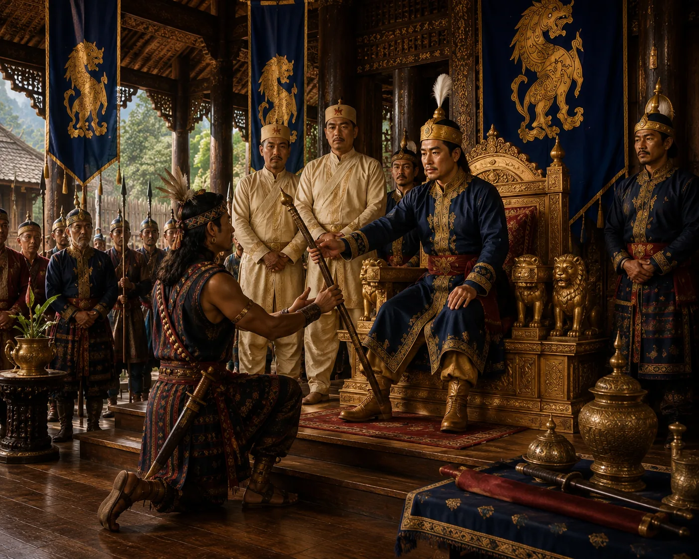

Creation of the Office of Barpatragohain
c. 1506 · Swarganarayan’s kingdom

Suhungmung creates a third great ministerial post—the Barpatragohain—elevating Konseng to equal rank with Burhagohain and Borgohain.
Sources have not yet been catalogued for this record.
People: Konseng Barpatragohain, Suhungmung (Swarganarayan)
Open this scene in the interactive archive · Follow this event on MAP